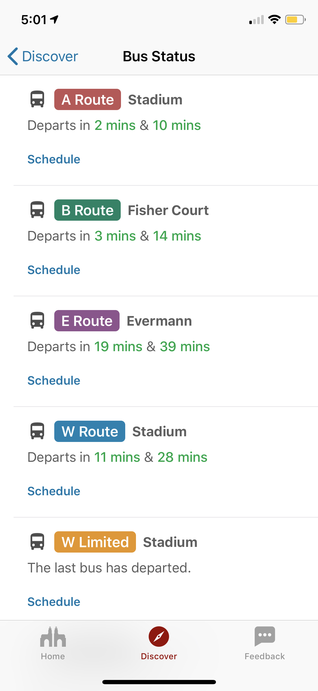
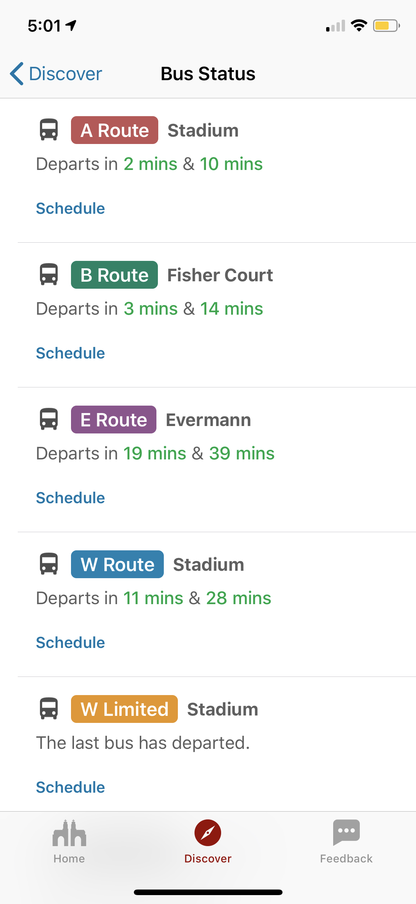
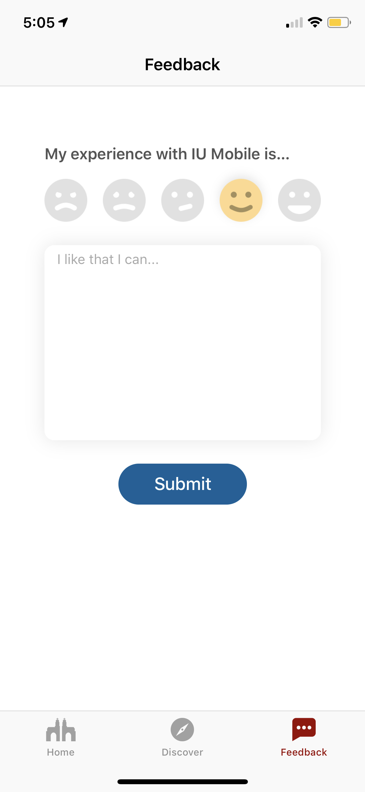
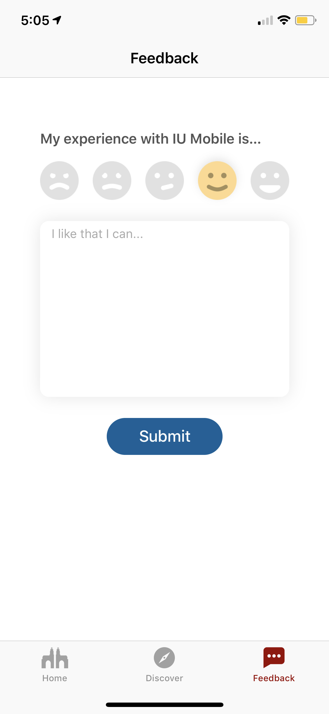

PACO WONG
PACO WONG

Interactions between users and businesses are moving towards mobile. However, colleges and universities have a hard time transitioning experiences to mobile. I started this project trying to improve students’ quality of life by providing useful and contextual information.
Currently, the mobile experience and design for students at IU are very outdated. It’s hard for students to find useful information to ease their lives on campus. Moreover, there are repetitive tasks that student do that are not easily accessible through a mobile phone. This is caused by a few factors:
These problems frustrated me, so I decided to create an iOS application for myself to make finding information easier. A native iOS application allows for a smoother and more seamless interaction. I started the project with three important features: reading IU news, finding food, and tracking bus departure.
Eventually, I wanted the application to be the place to go to for anything student-related. Including class planning and registration, appointment scheduling, room reservation, and more.
We separated the features for the app into short term and long term goals. This allows us to focus on useful yet feasible features first, and learn from students through their feedback. These short term goals are set according to the long term goal we have (or the “North Star”).
Students access a lot of information and services. However, we need to make sure that the app doesn’t become a “kitchen sink” by abundantly putting every feature we can think of without considering the experience. We spent a lot of time thinking what features to include or give up. Also, we’ve put a lot of thought into the home page, where information should be highly contextual to the time of day, students’ schedules, as well as any special events happening on campus.
As of November 2018, the beta app comes with the following features:
The North Star for this application is to do everything, for everyone, on any campus, and be aware of where I am and move with me through different phases.
This is an ambitious and abstract goal, but it encapsulates what we want the app to do ultimately. Ideally, students can access almost all campus services with their mobile phones.
Although I started this project alone, different people were also involved in this project, including project manager, data scientists, and other UX designers. As time went on, the team working on this project expanded from 3 people to 7 people.
With most features, I communicated with my supervisor to see the feasibility of the feature in terms of data availability. I then collaborate with another designer to create mockups and we discuss if the design is straightforward to recreate in code. This process generally involve everyone on the team giving critiques and feedback. Once we have a finalized design, I would start programming the features to make it a reality.
With the beta release in May 2018, we have accumulated over 70 testers trying the app and giving us feedback. Students have been very positive about the app, and have provided a lot of valuable suggestions about what we could be doing better with the app.
 


 

This is the first time that I am involved in user experience design, and this project has made me understood a lot more about what UX is about. Below are the things I learned about UX design:
Not only did I learn more about UX design, I’ve also learned various design techniques I can apply to other projects, how to effectively collaborate with colleagues in a workplace, the process of working in a large organization, and more.